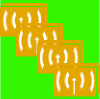

|
I have been involved in various
academic and engineering
projects. I have compiled the list below to give you a feeling as to
what kind of projects I have been into. Feel free to browse my research interests
and publications
for other details you might be after. Also, this recent article by NetworkWorld on WINLAB might be a good point to learn more about our vision at WINLAB.
|
|
| ORBIT |
 ORBIT
(Open Access Research Testbed for Next-Generation Wireless Networks)
is a two-tier laboratory emulator/field trial network
testbed that
supports evaluation of protocols and applications in real-world
settings. ORBIT is funded by major NSF grants and
was
born out of a collaborative effort
between several university research groups in the NY/NJ region:
Rutgers,
Columbia,
and Princeton,
along with industrial partners Alcatel-Lucent
Bell Labs, IBM
Research and Thomson.
ORBIT is being developed and
operated by WINLAB,
Rutgers University. I have been a member
of the
core development team since 2004 and worked on various design tasks. I
have also used ORBIT testbed in my research
for high density wireless
LANs as well as vehicular networking. For a light introduction, take a
look at this MIT
Technology Review article about ORBIT, covering ORBIT and
Pervasive Wireless as one of the ten most significant emerging
technologies. Our team has recently been awarded the fourth
annual Alexander
Schwarzkopf Prize for Technological
Innovation from the I/UCRC Association,
a voluntary, independent
organization of past and present members of the NSF’s
Industry/University Cooperative Research Center program. ORBIT
(Open Access Research Testbed for Next-Generation Wireless Networks)
is a two-tier laboratory emulator/field trial network
testbed that
supports evaluation of protocols and applications in real-world
settings. ORBIT is funded by major NSF grants and
was
born out of a collaborative effort
between several university research groups in the NY/NJ region:
Rutgers,
Columbia,
and Princeton,
along with industrial partners Alcatel-Lucent
Bell Labs, IBM
Research and Thomson.
ORBIT is being developed and
operated by WINLAB,
Rutgers University. I have been a member
of the
core development team since 2004 and worked on various design tasks. I
have also used ORBIT testbed in my research
for high density wireless
LANs as well as vehicular networking. For a light introduction, take a
look at this MIT
Technology Review article about ORBIT, covering ORBIT and
Pervasive Wireless as one of the ten most significant emerging
technologies. Our team has recently been awarded the fourth
annual Alexander
Schwarzkopf Prize for Technological
Innovation from the I/UCRC Association,
a voluntary, independent
organization of past and present members of the NSF’s
Industry/University Cooperative Research Center program.
|
|
| LOCATION STACK FOR FUTURE INTERNET |
| This project is funded by FIND (Future Internet Design) initiative of the NSF NeTS research program. As the Internet begins to encompass
a larger and more mobile set of devices, including our cars, portable
phones,
and sensing nodes, a major challenge lies in
the integration of
location information into the network architecture. There are several
key challenges in defining such a location-aware architecture. First,
the architecture should include a distributed location service that can
track and answer queries about the current positions of billions of
moving objects. Because of frequent position changes the load on this
service will be higher than on the current domain name system. Second,
the architecture must cope with translations between different
representations of location and accuracy information. Third, the
architecture must be suitable for hierarchical network structures and
allow routing between wired and wireless network components.
Examination of cross-layer designs
that support the use of location information at different (traditional)
network
layers is one of the key objectives of this project. I have been
participating in this project as a research assistant, investigating
the kinds of support we need from future Internet for better wireless
experience.
|
|
| MULTI-RADIO COEXISTENCE |
| I was involved in this project while interning during summers of 2005 and 2006 at Intel Corp. Communications Technology Lab.
Even today, small laptop platforms with six or more digital
communication radios (such as WLAN, WiMAX, GSM, UWB, GPS, Bluetooth,
DTV) are not uncommon. Sharing the same spectrum resources or not,
concurrent use of these radios create varying degrees of adverse
effects on each others performance, some noticeable by the end-user.
Objective of the project was first to evaluate and measure common
coexistence scenarios using real platforms under typical workloads to
find out degree of problem severity. Then several solutions, including
a software scheduling for coexistence coordination, have been
investigated for orchestrating multiple-radios on our future
wireless-capable devices. |
|
| VEHICULAR
NETWORKING |
In
this project, we investigate various forms of vehicle-to-infrastructure
(V2I) and vehicle-to-vehicle (V2V) communications to understand the
potential gains from optimizations such as fast signaling, diversity,
directionality and location awareness. We have been developing a
vehicular networking testbed as an extension to ORBIT testbed outdoor
infrastructure. This extension is composed of a number of vehicular
mobile nodes and fixed-location nodes with proper outdoor antennas to
provide us with an opportunity to test our designs in a real-world
environment. Our setup currently has one trunk-installed ORBIT
outdoor node in a passenger car and five modular seat-tray-installed
outdoor nodes. Fixed-location nodes are operational at five different
places with ten nodes in ORBIT facility at NJ Tech Centre, North
Brunswick and three locations in Rutgers University Busch Campus at
Piscataway.
|
| | | HIGH DENSITY WIRELESS LANs | | Wireless LANs are being deployed at an unprecedented scale. Hundreds of laptops in a conference room, trying to hunt down a robust
connection to the Internet, is not an unreal scenario anymore. However,
we are still far from understanding scalability properties of IEEE
802.11 wireless LANs, especially under typical real-world usage
scenarios. This project is an effort towards understanding the limits
of high density wireless LANs, beyond the overly simplistic 'more
clients have to mean degraded system performance' point of view. We
have been carrying out ORBIT testbed experiments with up to 350
wireless stations and up to 15 access points to break down the effects
of arrival patterns, MAC parameters, transport protocols, workload type
etc. |
|
| AVAILABLE BANDWIDTH ESTIMATION |
| This
project is about practical methods that allow for accurate available
wireless bandwidth estimation. An accurate method should account
for neighboring node interference (even when perceived in the form of
undecodable packets) and flow self-interference. We have investigated
applications of packet-probing method of wired networks to wireless
networks for this purpose. Our prototype system on ORBIT testbed showed
promising results for better wireless resource management that is key
to success for multimedia applications in wireless mesh and ad hoc
networks. |
|
|